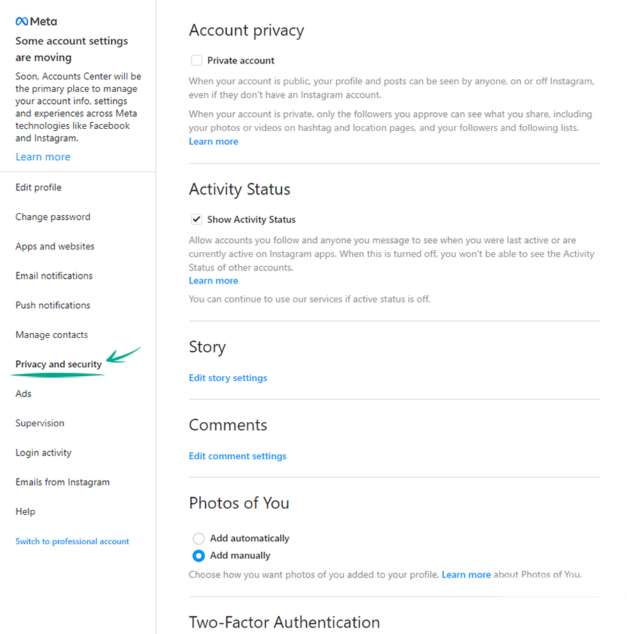
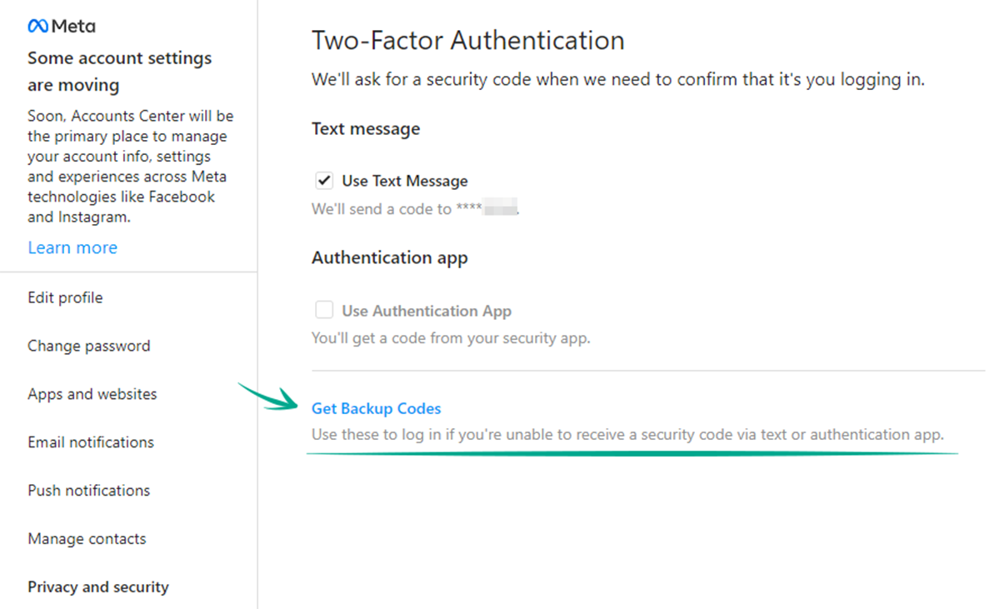
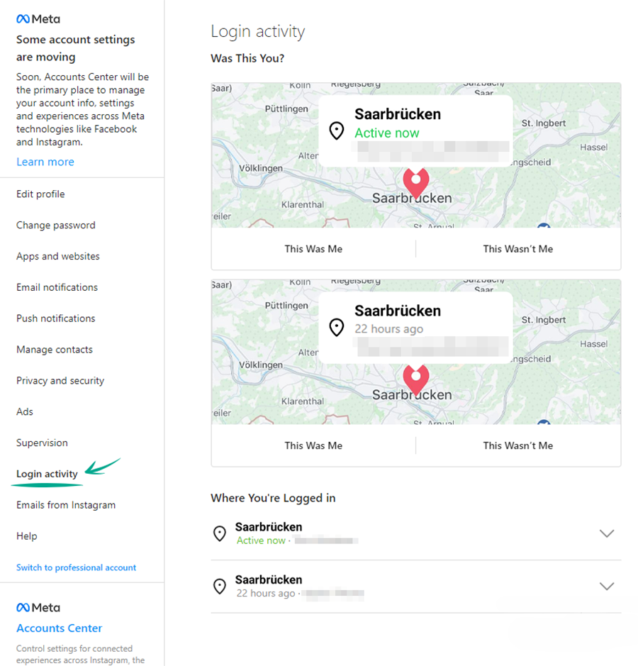

How to keep your account from getting hacked
-- Set a strong password
What for: So you don't get hacked.
If you are using a short and simple password for your Instagram account, cybercriminals can guess it and hijack your account. A long and complex password is more secure. Use a strong password that:
- Is at least 8 and up to 20 characters long;
- Contains lowercase and uppercase letters, numbers, and special characters ($, @, etc.);
- Is not an actual word or easy-to-guess phrase;
- Is not the same as your passwords for any other accounts;
- Does not consist of information that strangers could easily find out (your name, date of birth, pet's name, and so forth — or those of your friends or relatives).
To change your password:
- Click More in the lower left corner of the screen;
- Select Settings;
- Select the Change Password tab;
- Enter your current password and print a new one twice;
- Click Change password.

-- Enable two-factor authentication
What for: So you definitely don't get hacked.
Instagram can prompt you to enter an additional one-time code when you log in to the account.
Even if cybercriminals find out your login and password, they will not be able to use them without this code.
The code can be received via a text message or using an authentication app.
Keep in mind that Instagram can use the phone number you specified for one-time codes for its own purposes, for example to show you targeted ads.
To enable two-factor authentication based on your phone number:
- Click More in the lower left corner of the screen;
- Select Settings;
- Select the Privacy and Security tab; 
- In the Two-Factor Authentication section, click Edit Two-Factor Authentication Setting;
- Select Use Text Message to receive the verification code by text message;
- Select Turn On in the dialog that opens;
- Check the phone number used to receive the text message, edit it and click Next, if appropriate;
- Enter the confirmation code you receive by text message and click Ready.
In order not to lose your account in case you lose your phone number, save the backup codes:
- On the same page, click Get Backup Codes;
- Instagram opens a page with five backup recovery codes. Every code can be used only once. Write them down or take a screenshot of them, and keep this information in a safe place. 
~ Check the security of your account
What for: To detect and stop any suspicious activity before it's too late.
You can view information about all of your account activity and take steps when you detect suspicious activity.
To view the login history and other data of your account:
- Click More in the lower left corner of the screen;
- Select Settings;
- Select the Account Logins tab;
- Study active sessions and, if any unfamiliar entries, select a session and click Login Activity. 
~ Disable cross-service functions
What for: To prevent the loss of one account from causing the loss of all other accounts.
Instagram lets you link your account to profiles on other Meta platforms. This lets you automatically share your posts on other social networks. If cybercriminals hack your Instagram account, they will be able to publish posts on your behalf on related networks. Meanwhile, if cybercriminals find out the login and passport for your Facebook account, they will be able to hijack your Instagram account.
To disable posting in several social networks at the same time:
- Click More in the lower left corner of the screen;
- Select Settings;
- In the lower left corner of the settings window, select the Account Center section;
- Select Sharing across profiles;
- Click the connected profile and in the window that opens, disable the options Your story and Your posts .
~ Remove synchronized contacts
What for: So Instagram does not know more than it needs to.
If you enabled contact syncing in Instagram for iOS or Android, the social network uses your contacts to suggest you to follow accounts of people you know or to create targeted ads. Such data is passed on to others, including third parties, leading to an increased risk of data leaks.
To remove contact information:
- Click More in the lower left corner of the screen;
- Select Settings;
- Select the Manage Contacts tab;
- Click Delete All.
Note that without access to the contact list, Instagram will no longer be able to recommend the accounts of your friends whose numbers are in your smartphone contact list.
~ Stop third-party apps from accessing your account data
What for: To prevent potential data leaks.
If you connected other sites and apps to Instagram (e.g., to find subscribers, calculate likes and so on), they may have access to your profile info, images and videos you posted, lists of followers and follows. In some cases they may also be able to like posts and follow or unfollow accounts on your behalf.
After being granted access, such sites and apps do not normally inform you explicitly about the permissions you grant them.
To rule out any unauthorized activity in your account and lower the risk of data leaks, deny third-party apps and sites access to your data.
To revoke the access of apps to your account:
- Click More in the lower left corner of the screen;
- Select Settings;
- Select the Apps and Websites tab;
- Delete all applications from the Active tab.
~ Disable the use of your personal data in advertising
What for: So advertisers have less information with which to manipulate you.
Instagram may use information from advertisers and other partners about your activity on their websites and apps, as well as about some offline interactions (in particular, purchases). If such targeted advertising bothers you, disable it:
- Click More in the lower left corner of the screen;
- Select Settings;
- Go to the Ads section;
- In the Information about actions from advertising partners section, click View preferences for data from partners;
- Click Check Settings;
- Click No, don't make my ads more useful by using this information and then click Confirm;
- Disable the Use data from partners option.
You will still see ads, but they will not be based on your personal data from Instagram partners.